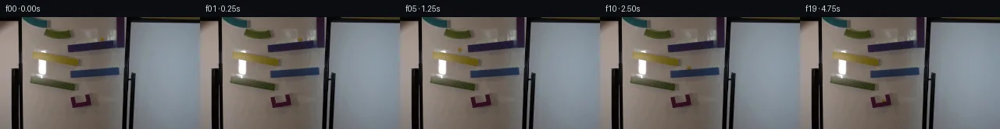
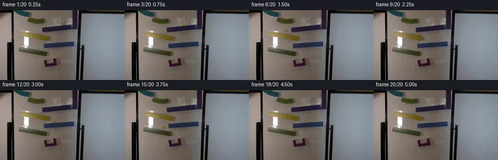
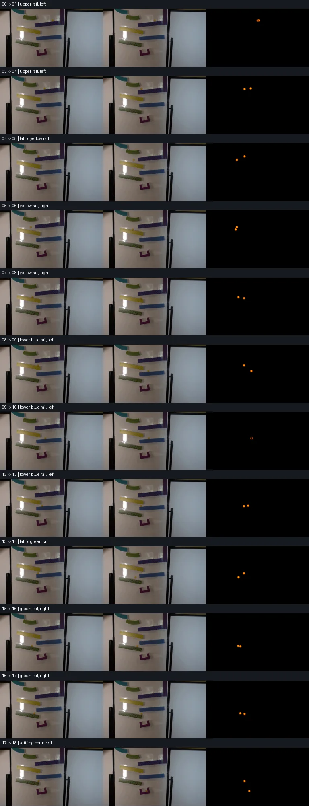

V0 · 初版 · 最终提交
![]()
Observable Generation Trace
把最终像素视频、Harness 冻结的每轮候选、真实工具事件和 Agent 自述放在同一页。可观测证据与模型自述分开标记，避免把“模型说它检查过”误当成真实工具调用。
![首帧]()
Static locked-off single-shot with fixed frame throughout filmed with constant framerate in real-time. The scene shows a realistic scientific demonstration. The scene only contains the described setup and actions. The magnetic ramps are attached to a whiteboard for a game of marble run. The yellow glass marble is released at the top of the ramps and then slides down the magnetic ramps.
首帧显示在左侧播放器初始画面。Track 权限、隔离和 tensor 一致性来自 run manifest，而不是 METHOD.md。
默认勾选初版和最终版；可选其他版本一起同步播放。仅检查图更新的连续重复快照已合并，回退旧视频仍保留为一次修订。
Observable events
来源：events.jsonl + run manifest
此 Track 禁止读取输出图片。逐轮预览由外部 Harness 自动冻结，只用于事后审计，生成 Agent 当时看不到这些页面。
Frozen candidates
每张图来自该 round 的真实 00 / 01 / 05 / 10 / 19 帧

pixels b7f7b1563a081685 · code 468db5e38babff24
--- previous/generate.py
+++ current/generate.py
@@ -0,0 +1,194 @@
+"""Pixel-only continuation: measured rail lines, analytic motion, source optical sprite."""
+from pathlib import Path
+import json
+import numpy as np
+from PIL import Image, ImageDraw
+from scipy.ndimage import map_coordinates
+from artifact_io import save
+
+ROOT = Path(__file__).resolve().parent
+W, H = 256, 144
+ORIGIN = np.array([130.2, 28.3])
+RADIUS = 2.7
+GRAVITY = 900.0 # image pixels / second squared, fixed image scale
+
+
+def rail_accel(slope):
+ return (5.0 / 7.0) * GRAVITY * slope / (1.0 + slope * slope)
+
+
+def trajectory():
+ """Exact constant-acceleration segments, tangent projection at each contact."""
+ segments = []
+ clock = 0.0
+
+ def add(name, p, v, a, duration):
+ nonlocal clock
+ segment = dict(name=name, start=clock, end=clock + duration,
+ p=np.asarray(p, float), v=np.asarray(v, float), a=np.asarray(a, float))
+ segments.append(segment)
+ clock += duration
+ return segment['p'] + segment['v'] * duration + .5 * segment['a'] * duration ** 2, segment['v'] + segment['a'] * duration
+
+ def on_rail(name, p, vx, slope, end_x):
+ ax = rail_accel(slope)
+ # positive time root of x(t)=end_x
+ roots = np.roots([.5 * ax, vx, p[0] - end_x])
+ duration = min(float(t.real) for t in roots if abs(t.imag) < 1e-8 and t.real > 0)
+ return add(name, p, [vx, slope * vx], [ax, slope * ax], duration)
+
+ def drop(name, p, v, slope, intercept):
+ # Intersect the falling center with the next rail's centerline.
+ roots = np.roots([.5 * GRAVITY, v[1] - slope * v[0], p[1] - slope * p[0] - intercept])
+ duration = min(float(t.real) for t in roots if abs(t.imag) < 1e-8 and t.real > 0)
+ return add(name, p, v, [0, GRAVITY], duration)
+
+ def impact(v, slope):
+ # Inelastic impact retains a small tangential velocity, including uphill drift.
+ return .20 * (v[0] + slope * v[1]) / (1 + slope * slope)
+
+ p, v = on_rail('upper rail, left', ORIGIN, 0, -.11, 86)
+ p, v = drop('fall to yellow rail', p, v, .18, 41.5 - .18 * 41)
+ p, v = on_rail('yellow rail, right', p, impact(v, .18), .18, 100)
+ p, v = drop('fall to lower blue rail', p, v, -.095, 67.4 + .095 * 88)
+ p, v = on_rail('lower blue rail, left', p, impact(v, -.095), -.095, 88)
+ p, v = drop('fall to green rail', p, v, .13, 75.1 - .13 * 38)
+ p, v = on_rail('green rail, right', p, impact(v, .13), .13, 96)
+ # The original cup's inside right wall limits center x to about 107.3.
+ duration = (107.3 - p[0]) / v[0]
+ p, v = add('fall into catch area', p, v, [0, GRAVITY], duration)
+ v[0] *= -.18
+ roots = np.roots([.5 * GRAVITY, v[1], p[1] - 107.5])
+ duration = min(float(t.real) for t in roots if abs(t.imag) < 1e-8 and t.real > 0)
+ p, v = add('catch side collision', p, v, [0, GRAVITY], duration)
+ # Two small floor bounces, with restitution 0.13 and horizontal drag.
+ for k in range(2):
+ v = np.array([v[0] * .4, -abs(v[1]) * .13])
+ duration = -2 * v[1] / GRAVITY
+ p, v = add('settling bounce ' + str(k + 1), p, v, [0, GRAVITY], duration)
+ resting = p.copy()
+ add('rest in catch area', resting, [0, 0], [0, 0], max(.001, 5 - clock))
+
+ def at(t):
+ segment = next((s for s in segments if s['start'] <= t < s['end']), segments[-1])
+ dt = np.clip(t - segment['start'], 0, segment['end'] - segment['start'])
+ p = segment['p'] + segment['v'] * dt + .5 * segment['a'] * dt ** 2
+ v = segment['v'] + segment['a'] * dt
+ return p, v, segment['name']
+ return segments, at
+
+
+def prepare_source(original):
+ """Restore the covered board by interpolating nearby RGB samples on parallel rail lines."""
+ yy, xx = np.mgrid[:H, :W].astype(float)
+ # Align neighboring samples to the fitted -.11 rail slope.
+ left_x, right_x = 124.5, 136.0
+ left_y = yy - .11 * (left_x - xx)
+ right_y = yy - .11 * (right_x - xx)
… diff truncated; 107 more lines …pixels b7f7b1563a081685 · code 5ccf9efb4f4f63b9
--- previous/generate.py
+++ current/generate.py
@@ -1,6 +1,8 @@
"""Pixel-only continuation: measured rail lines, analytic motion, source optical sprite."""
from pathlib import Path
import json
+import base64
+import re
import numpy as np
from PIL import Image, ImageDraw
from scipy.ndimage import map_coordinates
@@ -182,7 +184,24 @@
end = first['p'] + first['v'] * dt + .5 * first['a'] * dt ** 2
max_position_error = max(max_position_error, float(np.linalg.norm(end - second['p'])))
assert max_position_error < 1e-8
+ # Verify the independent browser serialization, including every delta packet.
+ html = (ROOT / 'index.html').read_text()
+ data = json.loads(re.search(r'const DATA=(.*?);\nfunction unpack', html).group(1))
+ current = np.frombuffer(base64.b64decode(data['first']), dtype='<u4').copy()
+ decoded = [current.copy()]
+ for encoded in data['deltas']:
+ packet = np.frombuffer(base64.b64decode(encoded), dtype='<u4')
+ cursor = 0
+ while cursor < len(packet):
+ start, count = int(packet[cursor]), int(packet[cursor + 1])
+ cursor += 2
+ current[start:start + count] = packet[cursor:cursor + count]
+ cursor += count
+ decoded.append(current.copy())
+ decoded = np.asarray(decoded).reshape(20, H, W).transpose(1, 2, 0)
+ assert np.array_equal(decoded, packed)
report = dict(frame_count=20, fps=4, playback_seconds=5, shape=list(packed.shape), dtype=str(packed.dtype), encoding='0xRRGGBB', frame00_exact=True, all_pngs_match_tensor=True, static_pixels_preserved_outside_ball_regions=True, changed_pixels_vs_source=differences, max_segment_position_error=max_position_error, image_tools_used=False)
+ report['standalone_player_decoded_matches_tensor'] = True
(ROOT / 'validation.json').write_text(json.dumps(report, indent=2))
print(json.dumps(report, indent=2))
for state in states:Final visual checks
Harness 保存的最终产物


Agent claims
以下文字由生成 Agent 撰写，不等同于工具证据
The source is RGB, 256 × 144. Inspection uses only local Python array reads, RGB statistics, and coordinate-indexed text tables; no image viewer or image Read/View tool is used. Coordinates below are image pixels, x right and y down.
The locked frame contains a board between approximately x=29 and x=152, bounded by dark vertical frame strips. The board is warm gray under the recorded lighting (typical RGB near (108,98,88) on its right half and (150,138,130) on its left). The surrounding right area is cooler gray, typically (136,146,156). Preserve these source pixels, the board, its frame, all rails, reflections, and the surrounding scene.
A small amber/yellow object is centered approximately (130.2,28.3), radius about 2.7 pixels. Its saturated core has RGB around (119,93,16) and (114,89,13); it has soft darker edges. This is the moving glass marble. Its location is already on the highest occupied rail; a short unused rail is present above/left near x=56–90, y=18–26. Do not introduce another marble.
Measured occupied route:
Some rail boundaries are antialiased and shadowed, so contact centerlines use subpixel fits rather than raw threshold edges. The scene is very small; the sphere stays approximately its measured size. No camera motion or changes to the fixed setup are planned.
Frame 00 is the untouched source. Times use t=frame/4; the twenty frames occupy a five-second playback interval.
| Frame | Time (s) | Planned event |
|---|---|---|
| 00 | 0.00 | Exact initial source; marble near (130,28). |
| 01 | 0.25 | Released; a small leftward displacement on upper occupied rail. |
| 02 | 0.50 | Accelerating left along the same rail. |
| 03 | 0.75 | Further left/down on upper rail. |
| 04 | 1.00 | Approaches the upper rail's left end. |
| 05 | 1.25 | Reaches the end region of the upper rail. |
| 06 | 1.50 | Falls toward the yellow rail; the incoming leftward motion is absorbed at contact. |
| 07 | 1.75 | Briefly reverses after landing, then begins rolling right. |
| 08 | 2.00 | Accelerates right on the yellow rail. |
| 09 | 2.25 | Near the yellow rail's right end. |
| 10 | 2.50 | Drops onto the lower blue/purple rail. |
| 11 | 2.75 | Reverses and rolls left on the lower blue/purple rail. |
| 12 | 3.00 | Moves toward its left end. |
| 13 | 3.25 | Approaches/leaves the left end. |
| 14 | 3.50 | Falls toward the green rail. |
| 15 | 3.75 | Lands and turns right on the green rail. |
| 16 | 4.00 | Rolls toward the green rail's right end. |
| 17 | 4.25 | Drops toward the catch area. |
| 18 | 4.50 | Small damped settling motion in the catch area. |
| 19 | 4.75 | Marble rests in the catch area. |
Generation will use source-preserving local reconstruction at the initial marble location, a subpixel sphere sprite derived from the measured source colors, and an analytic gravity/contact trajectory. Actual event timings may be refined after numeric contact and continuity checks; the route and fixed-scene constraint remain as described.
This continuation was produced entirely in local Python, using NumPy, Pillow, SciPy interpolation, and the supplied output helper. Inputs were only first_frame.png and prompt.txt; the supplied generation rules and player/helper files define the output contract. No network, external reference, external model, physics engine, subagent, or image viewing tool was used. No visual review is claimed. Scene interpretation and verification used numeric RGB arrays, pixel-coordinate tables, color thresholds, and analytic geometry.
OBSERVATION.md was written before the generation code. Its coordinates identify the initially occupied upper dark rail, the yellow rail, the lower dark rail, the green rail, and the existing burgundy catch area. The marble is an approximately 5–6-pixel-wide amber glass sphere, centered near (130.2,28.3) in the source. The unused short rail higher on the board stays fixed.
The original frame is copied exactly to frame 00. For subsequent frames, a 62-pixel local soft mask reconstructs the small area covered by the original marble. Reconstruction linearly interpolates nearby source RGB samples, vertically aligned to the measured upper-rail slope. Everywhere else, the source image remains the fixed background. The moving sphere uses the source marble's measured per-channel transmission ratios relative to that reconstructed background. Bilinear subpixel sampling moves this optical sprite, preserving its soft silhouette and dim yellow/amber coloring while responding to the underlying background. Three samples over an 8 ms exposure add very short motion blur. A small local contact shadow follows the ball on rails. The existing catch-area front lip occludes the sphere's lower edge where appropriate.
The path is analytic in image coordinates: constant gravitational acceleration of 900 pixels/s², with rolling acceleration equal to (5/7) times the gravity component along each fitted rail. The scale is inferred from the small image, rather than recovered from physical calibration. Free-flight sections intersect the next fitted rail centerline. Each landing projects incoming velocity onto the new rail and retains 20 percent of the tangential component, producing a brief uphill drift before gravity reverses the marble. The cup's side wall causes a damped horizontal rebound; two very small floor bounces use restitution 0.13. Position is continuous at every transition. The marble's world rotation is not resolved at this tiny image scale.
Final event timings in seconds:
| Interval | Event |
|---|---|
| 0.000–1.125 | Accelerates left down the occupied upper rail. |
| 1.125–1.292 | Drops onto the yellow rail. |
| 1.292–2.080 | Reverses after contact and rolls right. |
| 2.080–2.235 | Drops onto the lower dark rail. |
| 2.235–3.363 | Briefly drifts right, reverses, and rolls left. |
| 3.363–3.527 | Drops onto the green rail. |
| 3.527–4.264 | Reverses after contact and rolls right. |
| 4.264–4.491 | Falls into the existing catch area and touches its side. |
| 4.491–4.560 | Two small damped settling bounces. |
| 4.560 onward | Rests near (106.9,107.5). |
The event plan was refined to these exact timings during numeric continuity checks. trajectory.json records every segment and all twenty sampled positions. All frames are 256×144 RGB, sampled at t=0,0.25,…,4.75 seconds and played for five seconds at a constant 4 fps.
generate.py: reproducible generation and numeric validation. Run python generate.py from this workspace.pixels.npz: pixels array, shape (144,256,20), dtype uint32, each value encoded as 0xRRGGBB.frames/00.png through frames/19.png: RGB frames, verified individually against the tensor.inspection.png: eight selected frames assembled into a contact sheet.transition_check.png: twelve adjacent-frame pairs with amplified numeric RGB difference maps in the rightmost column.index.html: self-contained player with fixed 250 ms frame intervals, replay, and frame seeking.validation.json: results of exact source-frame comparison, PNG/tensor comparison, static-pixel locality, segment continuity, and independent decoding of the player's delta packets.All checks pass. The first frame equals the input RGB pixels exactly. The HTML's decoded frames equal the saved tensor. Between 74 and 118 pixels differ from the source in later frames; these are confined to the original marble region and the moving marble/shadow region. Segment endpoint position error is below 10⁻⁸ pixels. The contact sheets were generated for user inspection, but were not opened with an image tool. Rail geometry and contact appearance are approximate inferences from a low-resolution source; this is an analytic pixel animation, not a reconstruction of measured real-world dynamics.